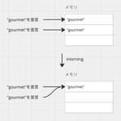

Retty Tech Blog
https://engineer.retty.me/
実名口コミグルメサービスRettyのエンジニアによるTech Blogです。プロダクト開発にまつわるナレッジをアウトプットして、世の中がHappyになっていくようなコンテンツを発信します。
フィード

リソース効率向上のためのGoのuniqueパッケージ 1
1
Retty Tech Blog
ソフトウェアエンジニアの福井です。 Go 1.23で新しくuniqueパッケージが追加されました。このuniqueパッケージはinterningを提供します。 interning interningとはGoに限らず、新しいオブジェクトを作成するときにすでに同じオブジェクトのメモリ割り当てがあればそのメモリを再利用し、メモリスペース効率を向上させる方法です。 interningを活用した具体的なユースケースとしては以下があると思います。 株価データの集計バッチで、同じ値が頻出するティッカーと株価のオブジェクトのinterning フリマサイト 評価データの集計バッチで、「とても良い取引ができまし…
4日前

Fastly ディクショナリを駆使してシステムを段階的移行する
Retty Tech Blog
ソフトウェアエンジニアの福井です。 業務では飲食店Webページの機能開発をしつつ、Webページを新システムに段階的移行しています。Rettyに掲載されている飲食店は様々な契約種別があり、その種別ごとに新システムに移行しています。 RettyはCDNにFastlyを使っており、新システムへのルーティングはFastlyで以下のように実装していました。FastlyはCDN(VCLベース)サービスを利用しています。 新システムにルーティングしたい飲食店IDをディクショナリに保存します。リクエストURLの飲食店IDがディクショナリ内に存在していればバックエンドを新システムにします。 ディクショナリの制約…
20日前
大吉祥寺.pmに行ったら美味しいランチも楽しもう
Retty Tech Blog
Retty VPoEの常松です。来たる2024年7月13日(土)に技術勉強会 吉祥寺.pmの10周年イベント 大吉祥寺.pm が開催されます。私も登壇者の一人として参加予定です。 そんな大吉祥寺.pmですが、運営の方が「せっかくだから吉祥寺の美味しいものを食べていって欲しい」という思いから、おすすめのお店をX(Twitter)で募っていました。 大吉祥寺.pmに向けて、吉祥寺駅周辺のランチ情報を収集していますこのハッシュタグをつけて、お店の名前と写真をポストするだけです！#吉祥寺の美味しいものぜひご協力をお願いします！ https://t.co/qnq50BNT3a— 吉祥寺.pm (@kic…
4ヶ月前
Fastly の Edge Rate Limiting で苦労せずレート制限を実装する
Retty Tech Blog
Retty でエンジニアをしている山下です。 早いもので2024年も残り半分となり、年々1年の長さが短く感じるようになってきました。 Retty では nginx 移行を通じて学んだ Fastly のはじめかた で紹介したように CDN として Fastly を利用しています。 今回は Fastly の Edge Rate Limiting でレート制限を簡単に実装したことについて書こうと思います。 レート制限が必要な理由 Fastly の Edge Rate Limiting とは Edge Rate Limiting でレート制限を実装する方法 UI から設定する方法 Custom VCL…
5ヶ月前
低予算でGoのコードカバレッジレポートをPull Requestにコメントする using CircleCI
Retty Tech Blog
ソフトウェアエンジニアの福井です。 コードカバレッジのパーセンテージを上げる(または保つ)ことを強制することは悪いプラクティスとされます。 そのためRettyではいくつかのプロジェクトで、パーセンテージによってmergeできないなど強制せず、カバレッジのパーセンテージのみを見える化していました。 しかしどのコードがカバーされてるか参照できるカバレッジレポートが身近にありませんでした。 どのコードがカバーされてるかを参照することで以下のメリットがあります。 条件が複雑でないコードのリファクタリングの心理的安全性が高まる コード設計面での気づきが得られる 2つ目の"コード設計面での気づきが得られる…
7ヶ月前
プロダクトマネージャーとエンジニアリングマネージャーで協力して使われなくなったコードを消していった話
Retty Tech Blog
Rettyの松田です。普段はプロダクトマネージャーとしてSEOに関わっていることが多いですが、今回はエンジニアリング寄りのブログです。 元々Webエンジニアをしていたのである程度はコードを読むことができ、現実的にプロダクトの改善につながるものがあったため、週1時間ぐらいを確保してコードリーディングするのを半年ぐらい続けていました。 一定の区切りがついたのと、実際にいくつか不要なコードを削除することができたので、その取り組みについてまとめてみます。 きっかけ プロダクトの主要なページについて、現状を把握することが難しくなってきていることが課題として存在していました。 主要なページは数多くの施策が…
8ヶ月前
アプリのバックエンドをGraphQLに移行しました
Retty Tech Blog
この記事はアプリチームのAndroid、Backendを主に担当している松田がお送りします。 概要 現在、アプリのバックエンドはREST APIで構築されていますが、これを新規開発はGraphQLに移行しました。移行した背景と技術的な選択、実装時の考慮点を紹介します。 移行理由 GraphQLへの移行を考えたのはオーバーフェッチの問題です。 オーバーフェッチをしないために、ユーザー情報の型がタイムライン用、ユーザー詳細用、店舗の口コミ詳細用と様々あり、管理が大変になっていました。 このような理由から、スキーマを定義して1つだけ情報を返す実装すれば良いGraphQLに移行する事にしました。 技術…
8ヶ月前
GitHub Copilotで効率的にSQLを書くコツ
Retty Tech Blog
Rettyプロダクトマネージャーの松田です。 プロダクトの現状把握や施策効果の分析など、さまざまなタイミングでBigQueryのSQLを書くことがあります。 Rettyでは昨年末にGitHub Copilotを導入したので、それに合わせてSQLの作成にもGitHub Copilotを使い始めました。 使いたいテーブルが偏っていたりテーブルの設計が似ているものが多く毎回同じようなクエリを書いていましたが、GitHub Copilotの導入で体感としては半分ぐらいに作業時間を短縮できたと思います。 まだまだ不十分だと感じることもありますが、現時点でも十分に活用できているので、GitHub Copi…
9ヶ月前
アプリ開発メインの私が業務で擦れるほど使い倒しているGit/GitHub CLIの便利コマンド4つ
Retty Tech Blog
Rettyアプリチームの今泉 @imaizume です。 昨今の開発において、バージョン管理ツール、特にGitとGitHubを多くの方が使っていると思います。 日常的に高頻度で行う作業ですので、かける手間や時間は極力抑えたいもの。 とりわけブラウザ、開発環境、ターミナル間の移動やロード時間を抑え、1つの画面内で開発からPull Request作成までを完了させたいものです。 そこで今回は、普段のモバイル開発で私が使っているGit及びGitHub CLI (gh コマンド)の活用事例について紹介します。 GitHub CLIについて cli.github.com GitHub CLI (gh コ…
9ヶ月前
Retty VPoE通信 Vol.2
Retty Tech Blog
Retty VPoE(VP of Engineering : 技術部門のマネジメント責任者)の常松です。 VPoE通信は「開発のトップとして今何を考えていて、どう動こうとしているのか」の定期発信企画で、今回が2回目です。 Retty VPoE通信 Vol.1 - Retty Tech Blog VPoEの管掌は技術組織のマネジメントまでが一般的かと思いますが、2023年4月からは企画・デザインも含めた開発組織全体を見る役割を担っています。 それはVPoEの仕事なんですか? この1年仕事をしていて「それはVPoEの仕事なんですか?」とメンバーから問われる機会が幾度となくありました。 事業戦略の立…
10ヶ月前
FRM事業(集客支援事業)の成長を支援！Retty営業企画部の取り組みを紹介
Retty Tech Blog
Rettyの営業企画部マネージャーの平野です。 昨年まではデータ分析チームに所属しており今年1月から営業企画部へ異動しました。 （これまでの取り組みはこちら） 営業企画部は2020年頃から設立されていましたが、私の異動と同時に大幅な体制変更があり、役割も変化しました。その変化からもうすぐ一年が経過し、私たちの役割や取り組みがようやく確立してきました。 来年には、他社の事業開発や営業企画の担当者と積極的に情報交換や意見交換を行いたいと考えています。そのため、今回は自己紹介も兼ねて、営業企画部の全体像や私たちの取り組みについてご紹介します。 ぜひ、最後までご覧いただけると幸いです。 前提:FRM事…
10ヶ月前
【Retty新卒エンジニアの成長記録】成長ではなく変化し続ける、そしてみんなで一つのプロダクトを作る
Retty Tech Blog
Retty Advent Calendar 2023 Day17 の記事を担当します。俵積田です。 Rettyに入社して半年以上経ったのでこれまでに自分が体験して感じたこと・考えたことを書いてみました。 これまで技術系のブログは書いたことはあるのですが、自分の抱いた思いを文字に起こしてインターネットに公開するのはこれが初めてなので若干照れ臭く恥ずかしいです。 まず、簡単な自己紹介そして、Rettyに入社した背景から書き起こさせてください。それから"入社して半年以上が経過した自分が共有したい考え方"という項目を通して、自分が身につけた考え方に触れていこうと思います。 自己紹介 23卒のWebエン…
10ヶ月前
日本全国で自社のサービスをドッグフーディングしてみて
Retty Tech Blog
この記事はRetty Advent Calendarの10日目の記事です。 私が行っているドッグフーディングの内容 検索 作成した行きたい・オリジナルリストから探す 投稿（のための飲食店観察） 飲食店情報の更新 他サイトとの比較 ドッグフーディングの成果など 2023年の報告件数 見つけた改善点、不具合の例 1. 検索サジェストでエリア入力が考慮されず、常に東京や有名店がサジェストされてしまう 2. 周辺に店舗がない場合の画面 3.投稿対象の店舗を見つけやすくするための修正 4. 実データを使って、新しい行きたいリスト・投稿作成画面を検証 学び 環境を変えて使うと見えなかった事象に気づける 実…
10ヶ月前
『体が酒になる』対策でアルコール計算機を作ってみた
Retty Tech Blog
おはようございナース！🍆どうも、エンジニアの木村です。これは Retty Advent Calendar 2023 Day13 の記事になります！🎉 — 注：本記事には酒の酔いに関する記述があります。たぶん、酔いは個人差や健康状態など様々な要素にも左右されるはずです。詳しくは厚生労働省が飲酒に関わる情報をまとめてくれているので参考にしてください。 『体が酒になる』 さて、量を気にせずに酒を飲んでいると体が酒になります。ということで、アルコール量を計算して摂取量の目安を覚えておけば良いんじゃないか？と考えました💡 アルコール計算機を作っちゃおう 電卓を叩くよりはフォームとかで計算できたら便利じゃ…
10ヶ月前
大規模サイトのクロール・インデックス - Rettyでの取り組み -
Retty Tech Blog
Rettyの松田です。Rettyアドベントカレンダー、2023年12月11日を担当します。今後とも多くの方にRettyを使っていただくための土台として、現在取り組んでいる日々のクロール・インデックス管理について、ご紹介できればと思います。
10ヶ月前
新卒エンジニアの振り返りと俺流みんなと仲良くなり術
Retty Tech Blog
はじめに 自己紹介 何を伝えたいか なぜRettyへ入社したのか エンジニアとしての半年間の振り返り インターン不参加・Android開発未経験からの入社 とにかく自分の状況を発信する とにかく出来る人の真似をする チームで開発すること 俺流みんなと仲良くなり術 Slackでのコミュニケーション 絵文字をつける 即レス・即リアクションをする timesでちょっとウケようとする 出社して皆とご飯を食べる イベント参加 さいごに はじめに はじめまして、Rettyの23卒エンジニアのわかたなおきです。この記事はRetty Advent Calendar 2023の4日目かつ23卒エンジニア第一弾の…
1年前
Goによるバッチ実装テクニック
Retty Tech Blog
ハロー! software engineerのTakato Fukuiです。最近バッチアプリケーションを開発しました。この記事ではその際に使用したバッチ実装のテクニックを説明します。
1年前
ChatGPTに特定業務特化IntelliJプラグインを作らせる
Retty Tech Blog
この記事はRetty Advent Calendarの2日目の記事です。 はじめに Rettyでエンジニアリングマネージャーを務める山田です。 ChatGPTが登場してから一年が過ぎました。その後社会にはAIが広まりつつあり、コーディングの世界にもGitHub CopilotのようなAIを応用した製品が浸透してきています。既に利用されているという方も多いのではないでしょうか？ AIを活用してのコーディングはとても快適で、お願いした通りにコードを作成してくれたり、よくわからないコードを説明してくれたり、もはやこれ無しでの仕事というのは考えられなくなってきています。 では、AIがあれば人間は面倒な…
1年前
22卒の私が1年間行ったRetty iOSプロジェクトの改善
Retty Tech Blog
こんにちは アプリ開発チームでiOS開発をしているレイです。 約１年前の記事では、CI/CDサービスの切り替えについて紹介しました。 engineer.retty.me その後も、私は日々の施策開発以外にも多くの技術的な課題を解決してきました。今回はこの一年間に取り組んだ改善点について、簡単に紹介したいと思います。 1. Swift Packageへの移行 ライブラリ、開発ツールの移行 約1年前に、BitriseからXcodeCloudにCI/CDを移行しました。その際、CocoaPodsやMintなどの外部ツールで管理していたものをSwift Packageに移行する作業を始めました。 ライ…
1年前
Agile Studioをリモート見学させていただきました
Retty Tech Blog
参加メンバーで記念写真 VPoEの常松です。 Rettyのメンバー7名でAgile Studioをリモート見学させていただきました。 Agile Studioと見学の経緯 www.agile-studio.jp Agile Studioは永和システムマネジメントが2018年に開設したアジャイルの専門組織で、福井県に拠点を構えています。 Webサイトやブログでの情報発信・勉強会の開催など、アジャイルの普及につながるさまざまな取り組みと並行して、スタジオを公開し見学できるようにしてくださっています。 www.agile-studio.jp スタジオ見学の仕組みは以前から知ってはいたものの、自社サー…
1年前
3つのトライでスプリント内のタスク分担がうまくハマった話
Retty Tech Blog
Webエンジニアの今井です！ Rettyでは現在4つの開発チームがあるのですが、2年近く在籍したチームを半年ほど前に離れ、今は「あんこうチーム」に在籍しています。 そのあんこうチームなんですが、ここ最近ベロシティがいい感じに上がってきており、プロダクトバックログから着手したアイテムをスッキリ終わらせられることが増えてきました。 何かがうまくハマっているのは間違いなさそうなので、今後もしっかりKeepしていけるように、その辺りを言語化してみようと思います！ スプリント内で「分担」することの課題感 優先順位はぶれさせずにベロシティを上げる 不確実性をできるだけ早く潰す 想定外のことが起きていないか…
1年前
新米マネージャーが「エンジニアリングマネージャーのしごと」輪読会に参加してみた
Retty Tech Blog
エンジニアリング部門で4月よりマネージャーを務める山田です！ Rettyでは以前「エンジニアリングマネージャーのしごと」という本について輪読会を実施しておりました。 engineer.retty.me www.oreilly.co.jp この度、IC(Individual Contributor)だった私が新たにマネージャーを拝命するにあたり、第二回の輪読会を開催していただけることになりました！ これまで一人のエンジニアとして活動してきた新米マネージャーがこの輪読会を通して何を学んだのかまとめていきます。 輪読会の形式 この輪読会は以下のような形式で実施されました。概ね第一回の輪読会と同じです…
1年前
アプリチームにおけるECS移行の作業範囲
Retty Tech Blog
アプリチームの松田です。 アプリチームではバックエンド専門の人やチームはおらず、Android/iOSを開発しながらバックエンドサーバーも開発、運用しています。そんなAndroid/iOSアプリ専用のAPIサーバーはAWS Elastic Beanstalk(以下EB)で運用されていました。古くはEBが社内で主に使用されていましたが、Amazon Elastic Container Service(以下ECS)を使用するという流れになっています。社内の他プロダクトと技術、知識を揃えるために、ECSへの移行を行いました。 移行作業はインフラチームと協力して行いますが、この記事ではRettyのアプ…
1年前
Tokyo dbt Meetup #5 で Lightdashについて紹介しました
Retty Tech Blog
分析チームの井下田（@hiroki_igeta）です。 Tokyo dbt Meetup #5で登壇機会をいただき、「Lookerから、dbtと相性のよいLightdashに移行してみた話」というタイトルで発表させていただきました。 speakerdeck.com ちなみに今回のMeetupは、オフラインとオンラインのハイブリッド開催でした。 会場および配信環境の提供をいただいたCARTA HOLDINGS様ありがとうございました！！ また、Meetupの企画をいただいた瀧本さま、発表をお聞きいただいた皆様にもこの場を借りてお礼申し上げます。 ↓こちらでイベントの録画をご覧いただけます！ ww…
2年前
GraphQL Inspection で守る GraphQL API
Retty Tech Blog
こんにちは。Retty インフラチームの幸田です。 今回は Retty で利用している GraphQL API に WAF (Web Application Firewall) を導入したのでその話をしようと思います。 Retty と GraphQL API GraphQL を利用した攻撃 リスクを伴う設定 悪意のあるクエリ Web API の脆弱性 Fastly Next-Gen WAF について GraphQL Inspection WAF のセットアップ GraphQL Inspection の有効化 Templated Rule 動作確認 ブロックについて Site Alerts を用…
2年前
API Gateway と Lambda で deploy bot を作った
Retty Tech Blog
この記事は Retty Advent Calendar Part2の25日目の記事です。 Part1はこちらです。 はじめに deploy bot の課題 deploy bot で行うこと 行ったこと 1 . Lambda function の作成 2. API Gateway の作成 3. Slack Api の作成 4. Lambda の設定、動作確認 Slack Interactive Messages の設定 ボタンの表示 Slack Interactive Component の設定 Request URL 用のAPI Gateway + Lambda の作成 Lambda func…
2年前
Retty VPoE通信 Vol.1
Retty Tech Blog
はじめに Retty VPoEの常松です。Retty Advent Calendarの最終日はここ数年、前VPoEの小迫が1年の総括をまとめていました。「開発のトップとして今何を考えていて、どう動こうとしているのか」は社内外に向けてもっと定期的に発信しても良いかなと考え、今回から「Retty VPoE通信」として始めてみます。四半期 or 半年おきぐらいの更新を目指していますが、Vol.2が来年のAdvent Calendarで公開されたら笑ってやってください。 今の役割と責務 10月に前任の小迫からは3つの肩書きと役割を引き継ぎました。(VPoE交代の経緯はこちらのnoteを参照) エンジニ…
2年前
dbtを使って、BigQueryにJavaScriptのUDFを作成する方法
Retty Tech Blog
Rettyのデータ分析チーム アナリティクスエンジニアの井下田(@Hiroki Igeta)です。 この記事はRetty Advent Calendar 2022 の24日目の記事です。 ※Part1 と Part2 の2つがあります！！ はじめに dbtを使ってUDFを作成するメリット 1. macrosディレクトリ配下に作成したいUDFを定義する 2. BigQueryにUDFを作成する 2-1. macro を実行するための設定 2-2. macroを実行する 3. macrosディレクトリ配下に作成後のUDFを呼び出すファイルを作成する 4. modelディレクトリ配下のファイルで作成…
2年前
iOSのCI/CDをXcodeCloud+GitHubActionsに移行し費用削減になったうえに運用効率が向上しました！
Retty Tech Blog
はじめに こんにちは アプリ開発チームで主にiOS開発をしているレイです。 この記事は Retty Advent Calendar Part2 の23日目の記事です。 Part1 はこちら 今回の記事では下記の内容で話をしようと思います はじめに 課題 CI/CDサービスの比較 XcodeCloud XcodeCloudとは？ XcodeCloudのメリット・デメリット 移行作業 XcodeCloudを導入するための変更 Workflow Workflowとは Workflowを作る Custom Build Scriptを作る ci_post_clone ci_pre_xcodebuild …
2年前